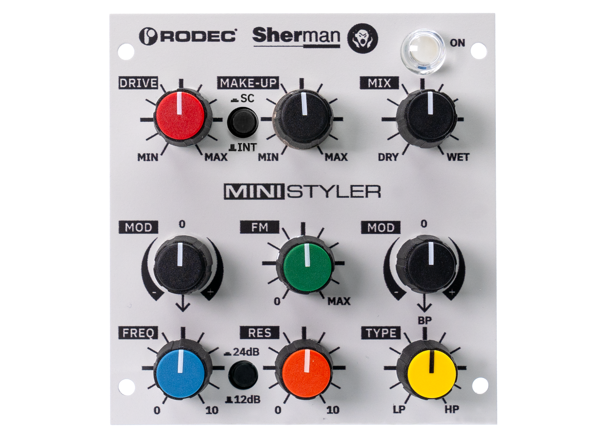
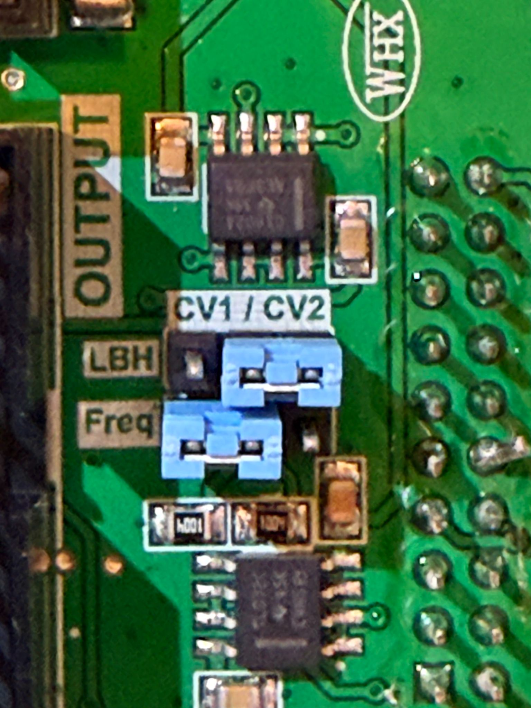

Rodec + Sherman MiniStyler

The MiniStyler is a compact evolution of the legendary Sherman ReStyler. It offers the same analog circuitry as the original, but with a more streamlined control layout and new creative tools: dual CV inputs and sidechain modulation. This makes it both easier to operate and more versatile, with enhanced automation possibilities for studio and live performance.
Top Row: Gain Staging
- Drive
Controls the input level, with up to +30 dB gain when fully pushed. - Make-Up
Sets the output level after the Drive stage, allowing precise volume matching. - Dry/Wet
Balances between the unprocessed (dry) and processed (wet) signal. - ON (pushbutton)
Engages or bypasses the MiniStyler’s effect section. - INT/SC (pushbutton)
Selects the modulation source:- INT: internal audio signal
- SC: external sidechain input
(See Modulators section for details.)
Second Row: Modulators
- MOD (Freq)
Modulates the filter frequency positively or negatively, using a fixed envelope derived from the selected modulation source (INT or SC). - FM
Frequency modulation of the filter, based on the selected modulation source. - MOD (Type)
Modulates the filter type (Low Pass / Band Pass / High Pass) positively or negatively, using a fixed envelope derived from the selected modulation source.
Third Row: Filter Section
- Frequency
Sets the filter’s cutoff frequency. - Resonance
Boosts the resonance at the selected frequency for more pronounced peaks and harmonics. - Type
Smoothly sweeps the filter from Low Pass to Band Pass to High Pass modes. - 24dB/12dB (pushbutton)
Selects the filter slope:- 12 dB/octave for a gentler roll-off
- 24 dB/octave for a steeper, more dramatic cutoff
CV
The MiniStyler can receive control voltage (CV) to modulate FREQ and TYPE.
CV routing is configured with jumpers on the PCB. (see image)
The 100 Series format provides two CV lines: CV 1 and CV 2.
- MX Modular: 1 CV input per stereo pair. This is connected to CV 1 on the 100 Series (via the 500 series adapter).
- Rodec ONE: 2 CV inputs. These are connected to CV 1 and CV 2 on the 100 Series.
External CV is mixed in after the MOD stage, so it does not affect the MOD processing itself.
FREQ CV
- 1 V/octave response
- Accepts positive and negative voltages
- The Frequency knob position remains active and is summed with the incoming CV
TYPE CV
- Accepts positive and negative voltages
- The TYPE knob position remains active and is summed with the incoming CV
- Range: -2.5 V to +2.5 V referenced from the BP (Band-Pass) position
- Equivalent: 0 V to +5 V referenced from the LP (Low-Pass) position

Set the CV input routing via jumpers on the CV board
Quick Start
- Engage the Effect
Press ON to activate the MiniStyler. Set Dry/Wet to fully wet processed sound. - Set Gain Staging
- Adjust Drive for desired input punch or saturation (watch the levels—full boost gives +30 dB).
- Match overall output with Make-Up so volume stays consistent when bypassing.
- Choose Your Modulation Source
- Press INT to modulate from the main signal.
- Press SC to use an external source via the sidechain input (e.g., drum loop to make the filter pump).
- Shape the Sound
- Turn Frequency to sweep through the tonal range.
- Add Resonance to emphasize and sharpen the cutoff point.
- Use Type to morph between Low Pass → Band Pass → High Pass.
- Add Motion
- Use MOD (Freq) to have the cutoff follow a fixed envelope from your modulation source.
- Use FM for audio-rate frequency modulation and extra grit.
- Use MOD (Type) to sweep the filter style automatically.
- Fine-Tune the Filter
Press 24dB/12dB to switch between a steep, dramatic cutoff or a gentler slope.
Tips from the Makers
A few insider notes to help you get the most out of your MiniStyler. These aren’t strict rules — more like creative nudges from us to you.
1. Resonance & Self-Oscillation
- When the resonance knob is fully open, the filter will self-oscillate. That’s normal — in fact, you can play it like an instrument.
- Connect a CV keyboard to FREQ (standard CV1) and the cutoff will track at 1V/Oct, so you can play notes directly.
- Left and right channels can be tuned or detuned independently. Use the blue trim pot on the PCB (right side) to adjust.
- The resonance can dive deep (down to ~5 Hz). Be warned: it might shake your stomach if you’ve just had lunch.
2. Gain Staging
- Use Drive and Make-Up to balance the wet level correctly.
- Important: Make-Up does not affect the dry signal.
- Aim for the same loudness with the unit on or off. If input is too low (or drive too soft), you may only hear the noise floor of the fat VCAs. Sometimes cool, sometimes not.
- Push the wet too far and the unit may even feedback when bypassed. That’s just voltage limits kicking in — interesting as an effect, but not always what you want.
3. Sidechaining
- When feeding the sidechain input, don’t slam it too hard — it may bleed into the main path.
- The sidechain peak detection circuit is plenty sensitive: signals in the 0 to +5 dBu range are ideal (about -20 to -15 dBFS in most DAWs).
4. Modulation Sensitivity & Timing
- The MOD sensitivity is factory-tuned to a sweet spot. If you prefer a different feel, adjust the left trim pot on the PCB.
- Attack and release are fixed, dialed in to sound great on beats across many BPMs. Still, we’ve seen it work magic on more than just drums.
Now go play, experiment, and make us proud.
— Herman & Tom